شمار خرگوشها در طبیعت بسیار زیاده و تنوعشون میتونه شما رو غافلگیر کنه اما همه اونا رو نمیشه خونگی حساب کرد. انواع نژاد خرگوش خانگی در ایران وجود دارن که شما میتونین اونا رو به سرپرستی بگیرین. درواقع خرگوشها بهترین حیوان خانگی برای کودکان و نوجوانان به حساب میان و حتی خیلی از بزرگسالها هم از اونا نگهداری میکنن.
اما حالا کدوم یک از این خرگوشها مناسب شما هستن؟ یعنی اونا از نظر رفتاری هم با هم فرق دارن؟ شرایط نگهداریشون چیه؟
خیالت راحت ما این راهو بلدیم و تو این مقاله نژادهای خرگوش بزرگ و کوچک خانگی رو بهتون معرفی میکنیم تا بتونین انتخاب خوبی داشته باشین.
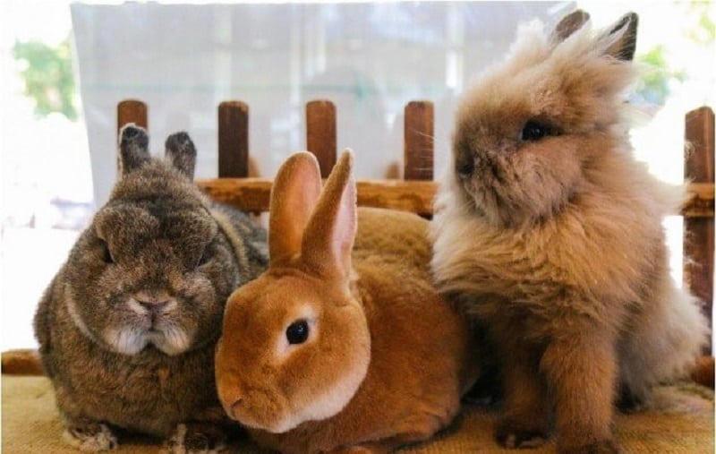
نژادهای خونگی خرگوش چه رنگی است؟
انواع خرگوش در اندازه و رنگ مختلف برای آوردن به خونه وجود دارن که شما میتونین بسته به سلیقه یا توان نگهداریتون اونا رو انتخاب کنین. برای سایزشون ما اونا رو تو دسته بندی انواع نژاد خرگوش در ادامه براتون آوردیم. اما درباره رنگ خرگوش یا طرحهای بدنش میتونیم بگیم که به صورت کلی نژاد خرگوش های خانگی شامل این چند رنگ و طرح میشه.
انواع رنگ خرگوش:
- آگوتی یا انواع طیف قهوهای که گاهی مایل به خاکستریه.
- مشکی که یا کاملاً مشکیه یا مشکی در ترکیب با رنگهای روشن تو بخش زیرین بدنه.
- آبی که یا به طیف خاکستری میزنه یا به طیف بژ یا نقرهای میرسه.
- سفید که گاهی یکدسته و اغلب اوقات در ترکیب با دیگر رنگهاست.
- دارچینی یا همون قهوهای پخشوپلای خودمون که یه جاهایی تیرهتر و یه جاهایی روشنتره.
- شکلاتی که دقیقاً مثل رنگ کاکائو، خوشمزه و تیرهست.
- کرم یا شیری که طیف رنگیاش تو جاهایی مثل گوش و دستوپا میتونه غلیظتر بشه.
- سرخ که تشخیصش از قهوهای گاهی کار سختی میشه.
طرحهای مختلف بدن خرگوش:
- گلولهای که ما اون رو با خالهای پراکندهاش روی بدن یا توی صورت به خصوص اطراف بینی میشناسیم.
- کالیفرنیایی که شامل بدن سفید و دست و پاها، گوشها و دم قهوهای یا مشکی میشه.
- کاستور که توی اون ما روی بدن خرگوش رو با یک رنگ تیره میبینیم و زیرش رو با یک رنگ روشن.
- چینچیلایی که انتهای موها روشنتر از سر اوناست و روی بدن تیرهتر (اغلب خاکستری) و زیر اون روشنتره (اغلب سفید).
انواع نژاد خرگوش مینیاتوری و ریزهمیزه خونگی
این نوع نژاد خرگوش معمولاً به خاطر کوچیک بودنشون، برای بعضیها دوست داشتنیتره. به خصوص بچههایی که هنوز توانایی نگهداری از انواع خرگوش های بزرگتر مثل نژاد آلاسکایی، نژاد کالیفرنیایی، نژاد چین چیلا و… رو نداره.
البته تو نگهداری از نژادهای خرگوش کوچیک باید مراقب باشین که زیر دستوپای شما یا حیوانات خانگی دیگهتون نرن. درواقع باید دو تا چشم دیگه هم قرض کنین.
نژاد یه خرگوش میتونه روی خلقیات و رفتارش تاثیر مستقیم بذاره. علاوه بر اون دونستن شرایط زیستی و نگهداری نژادهای خرگوش و درک تفاوتش با هم به شما کمک میکنه بتونین به بهترین نحو از خرگوشتون نگهداری کنین. در ضمن اینم باید بدونین که خرگوشها رو مثل گربه و سگ میشه تربیت کرد.
این کار شدنیه به شرطی که شما اصول و راه و روش عملی اجرایی کردن این فرمانها و آموزشها رو بدونین. تیم پت پرس تو این کتاب به صورت تخصصی قراره تمام این موارد رو به شما یاد بده. یه راهنمای عملی و کاربردی برای سرپرستهای خرگوش!
این ایبوک آموزش و تربیت خرگوش ها نوشته شده. بخونش، به کارهاش عمل کن و ببین خرگوشت چه جوری با هوشش و مهارت های که یاد میگیره، شگفت زده ات میکنه🤩 کلی هم بازی در این کتاب یاد دادیم که با انجامشون از وقت گذرونی با خرگوشت کلی لذت میبری.
لوپ هلندی (Holland Lop)، پشمالوی پر جنبوجوش
خرگوش لوپ هلندی جزو خانوادۀ نژادهای کوتوله است و جثۀ کوچیک، سر پهن، بدن کوتاه و توپر و پیشونیِ برجسته داره و بین یک تا ۱.۸ کیلوگرمه. تنوع رنگیِ زیادی داره و رنگ خزشون یا یکدست و یا ترکیبی از چند رنگه.
لوپ هلندی در سال ۱۹۷۹ توسط سازمان پرورشدهندگان آمریکایی خرگوش (ARBA)، شناسایی شده و از اون در صنعت سینما و نمایش استفاده زیادی میشه. حتی شخصیتهای کارتونیِ خرگوشها رو از روی این گونه طراحی کردن.
خرگوش لوپ گوشهای نرم، آویزون و افتاده است و میتونه کوتاه، بلند و حتی روی زمین باشه. بعضی از خرگوشهای لوپ هم «گوش هلیکوپتری» دارن، یعنی گوشهاشون به صورت افقی از سرشون خارج شده.
ترکیبی از خرگوش جرسی و لوپ هم تو بازار داریم که بهش میگن خرگوش لوپ جرسی که جثهاش از لوپها بزرگتر اما از جرسیها کوچکترن و مهمترین مشخصهشون اینه که زیاد لگد نمیپرونن و به نسبت خرگوشهای دیگه آرومترن.غذای خرگوش و به خصوص خرگوش لوپ بهتره شامل سبزیجات تازه، پلت و یونجه باشه. توجه داشته باشین که نباید به خرگوش لوپتون، غذاهای فرآوریشده مثل نون، شکلات، چیپس یا بیسکویت بدین.

مینی لوپ (mini lop)، خرگوش زیبای متفکر!
مینیلوپ از نژاد خرگوشهای لوپ آلمانی (Kleine Widder) و از زیباترین و محبوبترین حیوونای خونگیه. جثه ریز با گوشهای آویزون، شونههایی ماهیچهای و پهن، پاهایی کوتاه و ۲.۵ تا ۳ کیلوگرم وزن داره. پر جنبوجوش، باهوش، سرزنده و آموزشپذیره و علاقه زیادی هم به نوازش شدن داره.
برای افرادی که دنبال خرگوشی هستن که محل ادرار و مدفوع خودش رو زود یاد بگیره؛ مینی لوپ گزینه مناسبیه.
مینیلوپها اجتماعی هستن و با خرگوشها و حیوونای دیگه و افراد آروم به خوبی ارتباط برقرار میکنن. اونها از اسباببازی و به خصوص بازیهای فکری لذت میبرن و ساعتها با اون مشغول و سرگرم میشن و به طور کلی ترجیح میدن محیط زندگیشون آروم باشه.دو نژاد مینی لوپ و لوپ هلندی از انواع خرگوش مینیاتوری محسوب میشن. موهای خرگوش مینی لوپ نیاز به مراقبت و پیرایش روزانه داره تا دچار بیماریهای پوستی نشه. اونا تنوع رنگی و طرحی زیادی دارن و همین باعث شده خیلی پرطرفدار باشن.
خرگوش عروسکی یا خرگوش کوتوله هلندی (Netherland Dwarf)
خرگوش کوتوله هلندی از کوچیکترین نژادهای خرگوش و بسیار ریزه. بدن گرد و فشرده، گردن کوتاه، گوشهای ایستاده و کوتاه، پوشش براق و پرپشت در رنگهای متنوع و وزنی بین ۰.۵ تا یک کیلوگرم داره. با وجود جثه ریزش اما جنبوجوش و فعالیتش زیاده و بهتره محیط زندگیش طوری باشه که بتونه آزادانه بدوئه و بازی کنه.
این خرگوش مینیاتوری آرام، گوشهگیر و کمی ترسوئه، باید محیط زندگیش به دور از سرو صدا باشه و باید با حوصلۀ زیاد باهاشون رفتار کنید. حتی گفته میشه این نژاد خرگوش مستعد گاز گرفتنه، پس برای خانوادههایی که بچۀ کوچیک دارن انتخاب مناسبی نیست.پیشنهاد میکنیم مقاله رفتارشناسی خرگوش رو بخونین تا بتونین در مواقع مختلف بفهمین که خرگوشتون چه احساسی داره و چی میخواد بگه.
به طور میانگین خرگوش کوتوله هلندی ۷ سال و یا بیشتر زنده میمونه.
لهستانی (Polish)، یک خرگوش اهلی و آرام
خرگوش لهستانی، ترکیبی از نژادهای هلندی و هیمالینه و در دهه ۱۶۰۰ میلادی در بلژیک به وجود اومده و هدف اصلی از ایجاد اون، مصرف گوشتش بوده.
خرگوش لهستانی از نژاد کوتولهها است، به فضای کمی نیاز داره و نسبت به خرگوشهای دیگه، فعالیت کمتری داره. زیبا، آرام، اهلی، صمیمی و مهربونه و دوست خوبی برای بچهها است و از بازی با اونها لذت میبره.
خرگوش نژاد لهستانی بسیار باهوشه، حرکات دست رو درک میکنه و با تکرار و تمرین، آموزش میبینه و جزو اون دسته از خرگوشهایی است که محل دفع ادرار و مدفوعش رو خیلی زود یاد میگیره.از این خرگوش به خاطر اندازه کوچیک، هوش زیاد و ماهیت نمایشی بودنشون در شعبدهبازی و تردستی استفاده میشه.
نگهداری از خرگوش لهستانی به خاطر اندازه کوچیکش، راحته و در نسبت با خرگوشهای دیگه نیاز به پیرایش کمتری داره.
در نگهداری خرگوش لهستانی باید بدونین که برای تغذیه روزانه به یونجه، آب تازه و مقدار کمی پلت نیاز داره و اگه به خوبی از این نوع خرگوش نگهداری بشه؛ ۵ تا ۶ سال عمر میکنه.
انواع خرگوش لهستانی
خرگوش لهستانی دو نوع داره:
- کوتوله انگلیسی (لهستانی-انگلیسی): خیلی کوچیک و جمعوجور با وزنی حدود یک کیلوگرم و از گونه زال با چشمهایی به رنگ قرمزه.
- لهستانی آمریکایی: بزرگتر از کوتوله انگلیسی با وزن حدود ۱.۵ کیلوگرمه و به رنگهای مشکی، آبی و شکلاتی با رنگ چشمهای هماهنگ و سفید با چشمهای قرمز یاقوتی یا آبی دیده میشه.
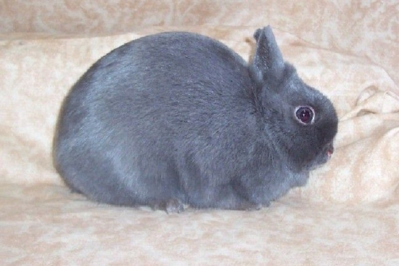
هوتوت کوتوله (Dwarf Hotot)یا چشم فانتزی!
خرگوش نژاد هوتوت کاملا سفیده و فقط هاله کوچیکی از دور چشمهاش رنگیه. این خرگوش در دهه ۱۹۰۰ میلادی به دلیل استفاده از پوست و گوشتش پرورش داده شد ولی با گذشت زمان و محبوبیت خرگوشهای کوتوله، به یه خرگوش خونگی تبدیل شد.
این نژاد خرگوش مینیاتوری، خز کوتاه، متراکم و کاملا سفید رنگ، گوشهایی صاف و ایستاده و گردنی کوتاه داره و وزنش بین ۰.۵ تا ۱.۲ کیلوگرمه.
هوتوت کوتوله باهوش، آموزشپذیر ولی موذیه و میتونه با شیطنتش لبخند به لب شما بیاره اما بعضی وقتها بداخلاق میشه. ولی شما صبوری کنید چون اون با عشق و مهربونی جوابتون رو میده. این خرگوش میتونه تمام روز و با یه اسباببازی ساده خودش رو سرگرم کنه ولی در عین حال به بازی کردن با شما و نوازشتون هم نیاز داره.برای نگهداری از هوتوت کوتوله باید موهاش رو به صورت هفتگی و با یه برس نرم شونه کنید تا موهای اضافهش وارد دهان و بدنش نشه. چون که تشکیل گلوله مویی و انسداد روده در این نژاد، بسیار شایعه و باعث کاهش اشتها و یبوست در خرگوش میشه. پس موهای اون رو به طور مرتب شونه و جمع کنید تا وارد بدنش نشه.
هوتوتها بر خلاف جثه کوچیکشون، اشتهای زیادی دارن. ولی یکچهارم پیمانه از پلت خرگوش برای اونها کافیه. یه قفس ۶۰×۶۰ یا ۴۵×۶۰ برای این خرگوشهای کوچیک، مناسبه و به راحتی میتونن توی اون حرکت کنن، بایستن، بخوابن و بازی کنن.
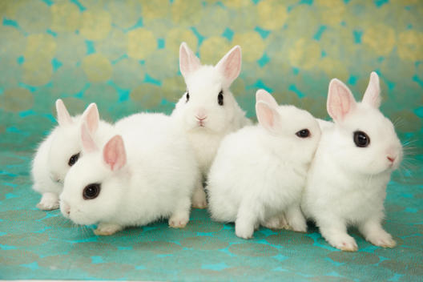
خرگوش مینی ساتین (Mini satin) همدمِ خانوادهها!
مینی ساتین بدن جمعوجور، سر و بدن گرد، خز نرم، لطیف و درخشانی داره. دوستداشتنی و آرومه و خیلی زود با همۀ اعضای خانوادۀ شما اُخت میشه.
خرگوشهای مینی ساتین رنگهای مختلفی مثل مشکی، آبی، ابلق (هر رنگی مخلوط با سفید)، شکلاتی، مسی، صدفی، سفید، قرمز، نقرهای، سیامی و اوپال دارن.

خرگوش آنقوره (Angora)
خرگوشهای آنگورا نسبت به بقیه خرگوشها، پوشش بدنی نرمتر و بلندتر و نیاز به رسیدگی منظمتر دارن و در رنگها و اندازههای مختلف دیده میشن.
خرگوش آنقوره به خاطر موهای بلندش مستعد بیماری انسداد روده است. به همین خاطر علاوه بر رسیدگی منظم، باید در رژیم غذاییش حتما از یونجه استفاده بشه تا از ایجاد گلولههای مویی در معده و رودهش جلوگیری بشه.
انواع نژاد خرگوش های بزرگ و درشتهیکل خونگی
نگهداری از انواع خرگوش بزرگ بیشتر مناسب نوجوانانه که اگه بخوان این حیوون خونگی رو بغل کنن، براشون سنگین نباشه و از پس آموزش و کنترل و نکات بهداشتیاش بربیان.
مینی رکس (Mini Rex) معروف به خرگوش مخملی!
مینی رکس در دهه ۱۸۰۰ میلادی و در فرانسه به وجود اومده. جثه بسیار کوچیک، گوشهای نسبتا کوتاه، پشتی گرد و خوشفرم و گردن و پاهای کوتاهی داره، وزنش حدود ۱.۵ تا ۲ کیلوگرمه و طولش هم ۳۵ سانتیمتره.
موهای بدنش کوتاه، نرم، درخشان و مخملیه (Velveteen Rabbits) که به طور صاف روی هم قرار نگرفتن. پوست بدنشون بسیار نرمه و به راحتی با دست لمس میشه. مینی رکسها تنوع رنگی زیادی دارن. مثلا: سیاه، سیاه و سفید، آبی، سه رنگ، شکلاتی و سفید.
برای پیرایش این خرگوش نباید از برس استفاده کنین، فقط کافیه دستاتون رو مرطوب کنین و روی بدنش بکشین.
خرگوش آلمانی (Dutch Rabbit)، نجیب و خونسرد!
نژاد خرگوش آلمانی یا خرگوش هلندی بر خلاف اسمش هیچ ربطی به کشور آلمان نداره و نژاد اون به کشور انگلستان برمیگرده و به اسمهای خرگوش هلندر (Hollander) یا براباندر (Brabander) شناخته میشه. این نژد در زمانهای گذشته بسیار معروف بوده ولی بعد از به وجود اومدن خرگوشهای کوتوله، از محبوبیتشون کم شده.
خرگوش هلندی روی بدن گِردش خطها و الگوهای رنگی و روی بینیش یه درخشندگی خاصی داره این موارد به همراه خز سفید رنگِ گردن و پشتش باعث میشه در بین خرگوشهای دیگه به خوبی شناخته بشه. همچنین این خرگوش نسبت به نژادهای کوتوله جثه بزرگتری داره و وزنش به ۲.۵ کیلوگرم هم میرسه.
این خرگوش کمی خجالتیه، پس قبل از اینکه بغلش کنین اعتمادش رو به دست بیارین. برای ارتباط گرفتن با سایر اعضای خانواده، به اون مهلت و اجازه بدین تا با محیط آشنا و خودش کمکم به شما نزدیک بشه.
اگه به خوبی از این نژاد خرگوش نگهداری بشه؛ ۸ تا ۱۰ سال عمر میکنه. یونجه و آب تازه باید همیشه در دسترسش باشه و از خوردن میوه و سبزیجات تازه هم لذت میبره.
لونهش باید بزرگ باشه و داخلش، جای خواب، ظرف آب و اسباببازی هم باشه. تمیز بودن لونۀ خرگوش، به سالم و شاداب بودنش کمک میکنه. (در همین رابطه بخونین: وسایل خرگوش)
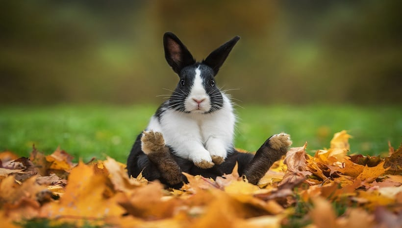
لوپ فرانسوی (French Lop)، بزرگترین نژاد خرگوش لوپ
لوپهای فرانسوی ۴ تا ۵ کیلوگرم وزن دارن. جزو نژادهای خونگی نیستن و باید در محیطی بزرگ و بیرون از خونه و همراه با خرگوشهای دیگه نگهداری بشن. خز بدنشون نرمه و به رنگهای قهوهای، سیاه، نارنجی، آبی و استیل دیده میشن. گوشهاشون بلند و حدود ۳۰ سانتیمتره و تا زیر آروارهشون پایین اومده.
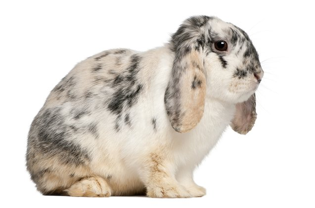
خرگوش آلاسکایی (Alaskan)
نژاد این خرگوش آلمانیه، جثه بزرگی داره و وزنش به ۴ کیلوگرم هم میرسه. موی بدنشون ضخیمه و به رنگ مشکی و قهوهای تیره دیده میشه.
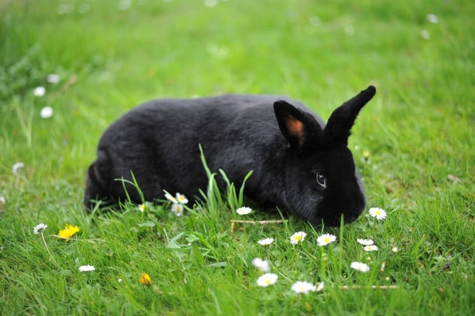
خرگوش چین چیلا (chinchilla)
این خرگوش جذاب و بامزه، جثه گرد و بزرگی داره و به رنگ خاکستری دیده میشه. پوشش بدنش نرمه و بلندی اون به ۳ سانتیمتر هم میرسه.
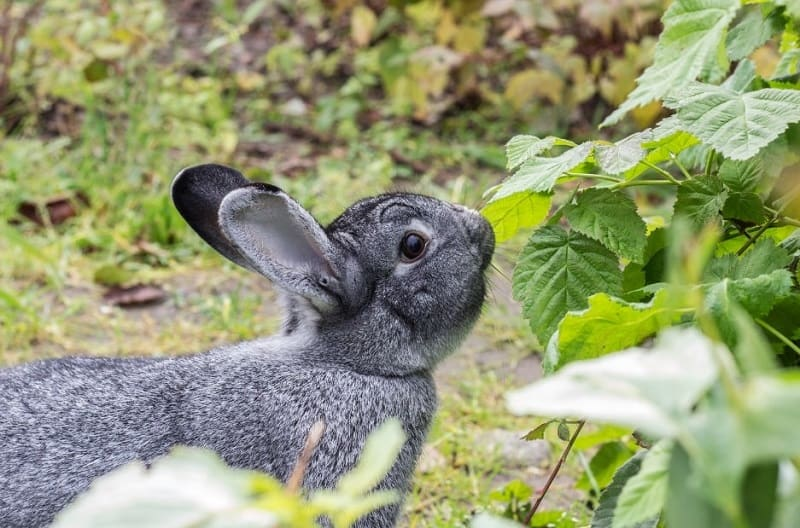
خرگوش جرسی پشمالو (Jersey wooly)
خرگوشهای جرسی موهای بلندی (۷ سانتیمتر) دارن که به صورت متراکم و یکدست روی بدن توپی شکلشون قرار گرفته. خرگوش جرسی به مراقبت منظم، شونه کردن روزانه و غذای مخصوص نیاز دارن.
جرسی ها معمولاً به عنوان جذابترین نژاد خرگوش پشمالو شناخته میشن.این نژاد خرگوش، جثه کوچیک و رنگهای متنوعی داره و بسیار باهوش و بازیگوشه و به خاطر حرکات و رفتارهای بامزهای که داره، بسیار محبوبه.

خرگوش فازی لوپ آمریکایی (American Fuzzy Lop)
این خرگوشها چثه کوچیک ولی بدن عضلانی و توپر، گوشهای بلند و افتاده و رنگهای متنوعی دارن. برخی اون رو به عنوان یه خرگوش مینیاتوری میشناسن که با توجه به جثهاش پذیرفتنیه.
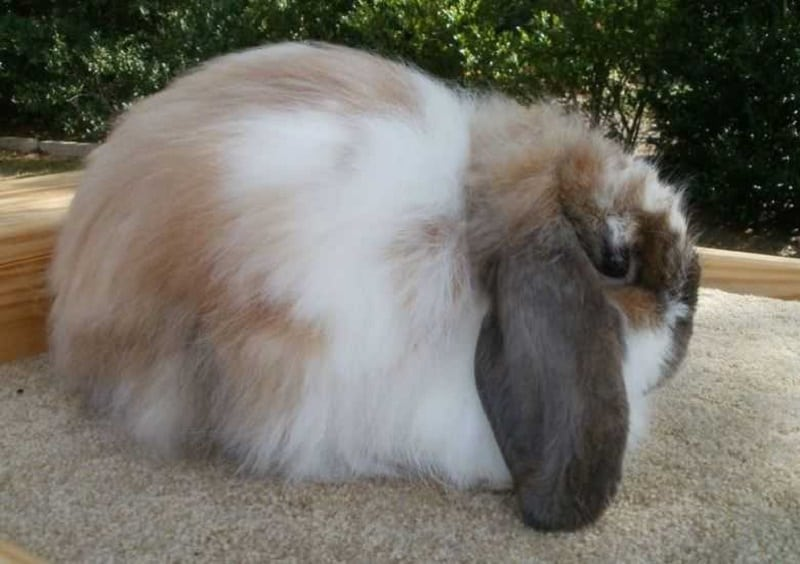
خرگوش هیمالیایی (Himalayan)
خرگوش هیمالیایی دقیقا شبیه به گربۀ هیمالیایی است. این خرگوش بسیار مهربونه، موی کوتاهی داره و بدنش سفید، کرم یا طوسی رنگ و پوزه و گوشهاش به رنگ قهوهای سوخته است.
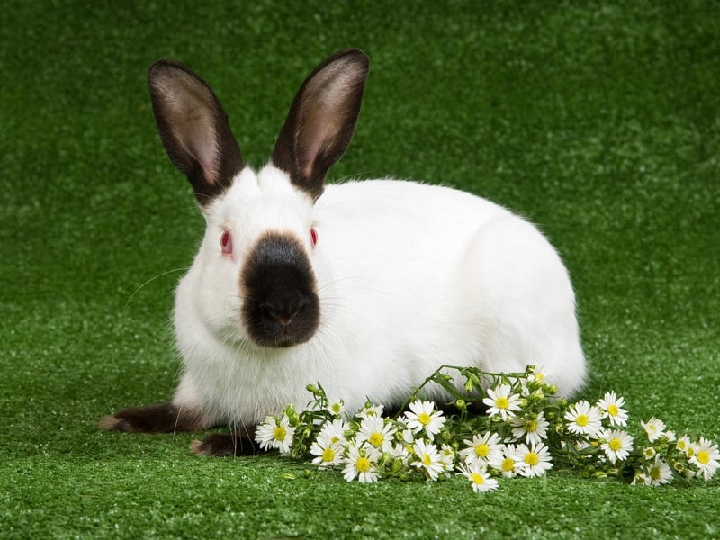
خرگوش امریکن سِیبل (American Sable)
این نژاد خرگوش جثه متوسطی داره و حدود ۳ کیلوگرمه و بیشتر به رنگ قهوهای روشن دیده میشه.
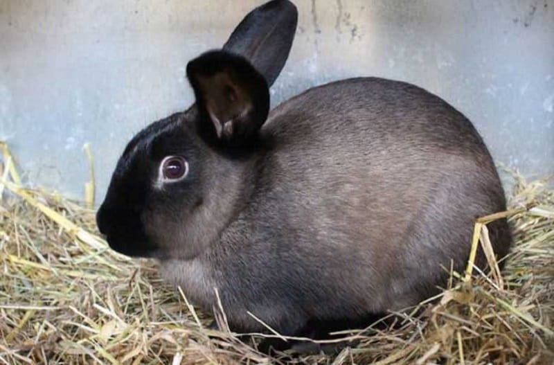
خرگوش بلژیکی (Belgian)
خرگوشهای بلژیکی، به خرگوش صحرایی یا خرگوش وحشی بلژیکی هم شناخته میشن. جثه بزرگ و تنومند و بدنی کشیده دارن. مهربون و پر جنبوجوش هستن و علاقه زیادی به بازی کردن دارن و چون موهای بدنشون سفت و کوتاهه، نگهداری ازشون راحته. این خرگوشها بلوطی مایل به قرمز هستن و رنگ بینظیر و منحصربهفردی دارن.
خرگوش دارچینی (Cinnamon rabbit)
نژاد خرگوش دارچینی، جثه بزرگی داره و همانطور که از اسمش هم مشخصه؛ فندقی یا دارچینیه و روی کمرش لکههای طوسی رنگی داره.
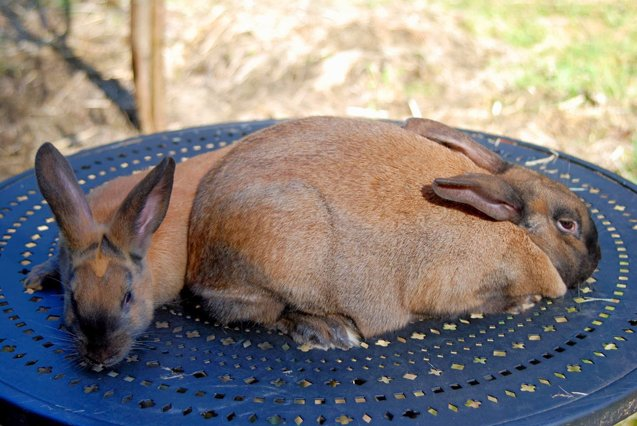
خرگوش چکرد جاینت امریکایی (American Checkered Giant)
این خرگوش حدود ۵ کیلوگرم و حتی بیشتره. سفید رنگه و روی کمر، چونه، گوشها، بینی و دور چشمهاش لکههای مشکی یا آبی رنگ داره.
نژاد کالیفرنیایی (Californian)
این خرگوشها جثهای متوسط، بدنی گرد با خزی نرم، کوتاه و سفید رنگ دارن ولی دم، پاها، گوشها و بینیشون مشکی رنگه.
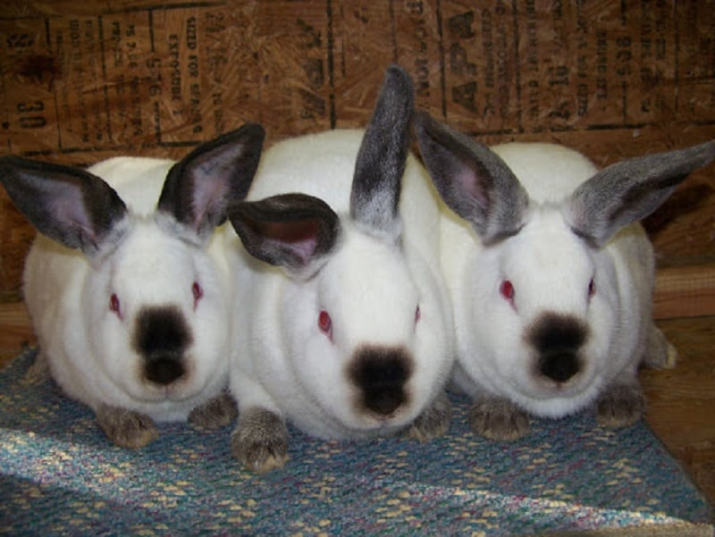
نژاد خرگوش چینی (Chinese rabbit)
فقط دو خرگوش هستن که متعلق به کشور چین به حساب میان و اونجا دیده میشن که جزو خرگوش های خانگی به حساب نمیان: سیچوان سفید و فوجیان زرد. این نژادهای خرگوش جثه متوسطی دارن با پاهای معمولی. طیف رنگیشونم از سیاه هست تا سفید و انواع قهوهای.
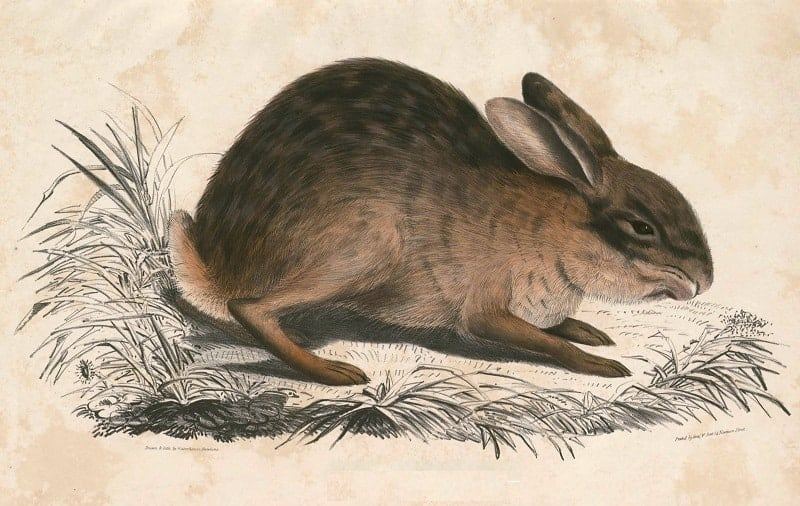
نژاد خرگوش سفید چشم قرمز چیه؟
چند نوع نژاد خرگوش داریم که تو این دسته قرار میگیرن که مشخصه ثابت همهشون بدن سفید و چشمهای قرمزه که ما رو یاد خرگوشهای آزمایشگاهی میاندازن.
- خرگوش آنقوره
- خرگوش فلوریدایی
- خرگوش کالیفرنیایی
- خرگوش بلان دو بوسکات
چگونه نژاد خرگوش را تشخیص دهیم؟
راستش این کار اونقدرها هم آسون نیست. شاید از روی جثه و مشخصات ظاهری بشه یه سری خرگوشها مثل لوپ یا آلمانی و… رو تشخیص داد. اما برای قطعی بودن این حدس باید از دامپزشک کمک بگیرین.
بهترین نژاد خرگوش برای نگهداری در خانه
از بین نژادهایی که براتون معرفی کردیم، اکثراً مناسب نگهداری تو خونه هستن ولی برخی از اونا نیاز به فضایی مثل حیاط و باغچه یا بالکن بزرگ دارن که بتونن تخلیه انرژی بهتری داشته باشن. اما اگه قصد نگهداری از خرگوش تو آپارتمان نقلی دارین پیشنهاد ما به شما این نژاد های خرگوش ئه:
- خرگوش لوپ و مینی لوپ
- خرگوش لهستانی
- خرگوش مینی رکس
- خرگوش آلمانی
- خرگوش هوتوت کوتوله
- خرگوش مینی ساتین
- خرگوش لوپ فرانسوی
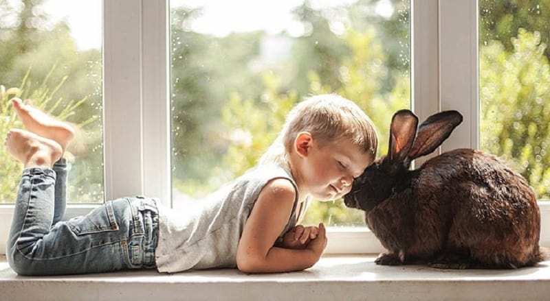
سوالات متداول خرگوشی
سوالاتی که ممکنه به ذهن شما هم برسه رو اینجا براتون آوردیم.
کلاً چند نوع خرگوش وجود دارد؟
خرگوشهای خیلی بزرگ تا خرگوشهای خیلی کوچک تو طبیعت وجود دارن. جثه برخی از بزرگترها اندازه گربههای بالغ و حتی بزرگتره. بنابراین انواع نژاد خرگوش به وحشی و اهلی و در بخش اهلی یا خانگی به بزرگ و کوچک تقسیم میشن.
چند نوع خرگوش پاکوتاه داریم؟
اغلب خرگوش های بزرگ پاهای بلندتری دارن و بیشتر نژادهای خرگوش کوچک، پاهای کوتاهتری دارن. بنابراین میشه گفت اکثر خرگوشهای ریزهمیزهای که تو این مقاله ازشون اسم بردیم جزو خرگوشهای پاکوتاه به حساب میان. معمولاً اونا رو جزو دستهبندی خرگوشهای مینیاتوری میاریم.
اون نژاد خرگوشی که بزرگ نمیشه کدومان؟
همون خرگوشهای کوچیک و به اصطلاح مینیاتوری که ازشون اسم بردیم.
کدوم انواع خرگوش در ایران پیدا میشه؟
شما میتونین تو ایران انواع خرگوش لوپ و مینی لوپ، خرگوش هلندی، خرگوش جرسی، خرگوش آنگورا، خرگوش Lion Head رو پیدا کنین و به سرپرستی بگیرین.
نژاد خرگوش مناسب شما کدوم یکیه؟
شناخت انواع خرگوش و نژادهاش به شما کمک میکنه تا بتونین خیلی بهتر با دنیای این حیوانات خانگی آشنا بشین. علاوه بر اون دونستن اطلاعات تخصصی درباره هر نژاد خرگوش باعث میشه شما بتونین شباهتها و تفاوتهای خرگوش خودتون رو با اون دسته پیدا کنین.
حالا که انواع نژاد خرگوش رو شناختین، نظرتون درباره نگهداری از هر کدوم از این نژادهای جذاب چیه؟

سلام و خسته نباشید و تشکر از اطلاعات مفید و سایت خوبتون
ببخشید من تصمیم دارم که یک خرگوش لوپ بخرم اما من جایی زندگی میکنم که تقریبا همیشه بجز زمستون هواش گرمه و فقط اخر هفته ها برای بیرون بردن خرگوش وقت دارم
من شنیدم که خرگوش ها توی هوای گرم نمیتونن زندگی کنن…آیا من میتونم خرگوش بگیرم؟
و اینکه من شنیدم موقعی که مگس ها زیاد میشن در پوست خرگوش ها تخم گذاری میکنن و در بعضی وقتا زیر پوستشون هم میره…آیا این حرف صحت داره؟…چه راه حلی برای دور کردن حشرات از خرگوش هست؟
سلام مهرناز جان
بهتره اگر خرگوش تهیه کردی حتما محل مناسب با دمای خنک براش فراهم کنی. دمای خیلی بالا یا خیلی کم میتونه براش کشنده باشه. بیرون بردن خرگوش الزامی نیست و همین که جایی برای جست و خیز داشته باشه کافیه.
مگس ها لاروگذاری رو روی زخم ها انجام میدن. ولی جرب ها پوست رو میشکافن و وارد پوست میشن. راه پیشگیری از انی دو هم مصرف مواد ضد جرب تحت نظارت دامپزشک هست و پاکیزگی روزانه محیط زندگیش
سلام
من می خواستم نژاد خرگوشی رو بدونم و برای فرستادن عکس و تشخیص نژاد باید با دامپزشک آنلاین در تماس باشم یا می شود توی نظرات عکس ارسال کرد؟
سلام بهار جان
برای این مورد بهتره با کلینیک آنلاین در ارتباط باشی توی کامنت ها امکان ارسال عکس نیست
سلام
ببخشید من یک طوطی کوتوله برزیلی دارم و قصد نگهداری یک خرگوش رو هم دارم می خواستم بدونم مشکلی در کنار هم بودنشون نیست و اینکه میتونن باهم کنار بیان چون من تو ی سایت خوندم که نباید در کنار خرگوش حیوونه خونگی دیگه ای نگهداری کرد و باعث سکته خرگوش و یا افسردگی خرگوش میشه می خواستم بدونم که ایا صحت داره یا نه؟؟؟؟؟؟؟؟؟؟؟؟؟؟؟؟؟؟؟؟؟؟؟؟؟؟؟؟؟؟؟؟؟؟؟؟؟؟؟؟؟؟؟؟؟؟؟؟؟؟؟؟؟؟؟؟؟؟
سلام نرگس عزیز
اگه به درستی تربیت بشه و کاملا اجتماعی بشه هیچ مشکلی با حیوونای دیگه نداره و میتونن دوستای خوبی در کنر هم باشن.
سلام به شما ما تصمیم داریم عید یا بعد عید خرگوش بگیریم، چند تا سوال دارم:
۱_ خرگوش های نر هم نیاز به جفت گیری دارن؟ چون احتمالا خرگوش نر بگیریم
۲_ می تونن تنها در خونه بودن رو تحمل کنن؟
۳_ خرگوش ها چه بیماری هایی دارن؟
۴_ تا چه موقعی باید شیر مامانشون رو بخورن؟
۵_ در چه سنی بالغ میشن؟
۶_ ببخشید که سوالام زیاد هست اگر میشه لطفا پاسخ بدید با تشکر خدانگهدار 🙏🏻
سلام نیکو جان
امیدوارم تجربه ی اول نگهداری خرگوش براتون لذت بخش باشه.
۱) بله همهی موجودات زنده نیاز به جفت گیری دارن. ۲)بستگی به میزان ساعت تنهایی دراه اما بیشتر از ۲ ساعت تنهایی توصیه نمیشه. ۳)بیماری های مختلفی مثل انگل هی پوستی و روده ای-قارچ ها- سالمونلا-تولارمی. که البته همشون میتونه کنترل بشه.
توی این مقاله که براتون لینکشو میذارم میتونی جواب سوالاتو پیدا کنی. اگر باازهم سوالی برات بی جواب موند اینجاییم که پاسخگو باشیم.
هرآنچه باید درمورد خرگوش خانگی بدانید
با سلام .
من یک سوال داشتم که به نظر شما اگر من یک عروس هلندی داشته باشم بهتره یا یه خرگوش اخه من خیلی به بیماری اهمیت میدم.
سلام پرنیکا جان
هر حیوونی بیماری های خاص خودش رو داره بخش زیادیش به نوع نگهداری شما و مراقبتت بستگی داره. سعی کن با توجه به علاقه و شرایطی که داری حیوون خونگیت رو انتخاب کنی